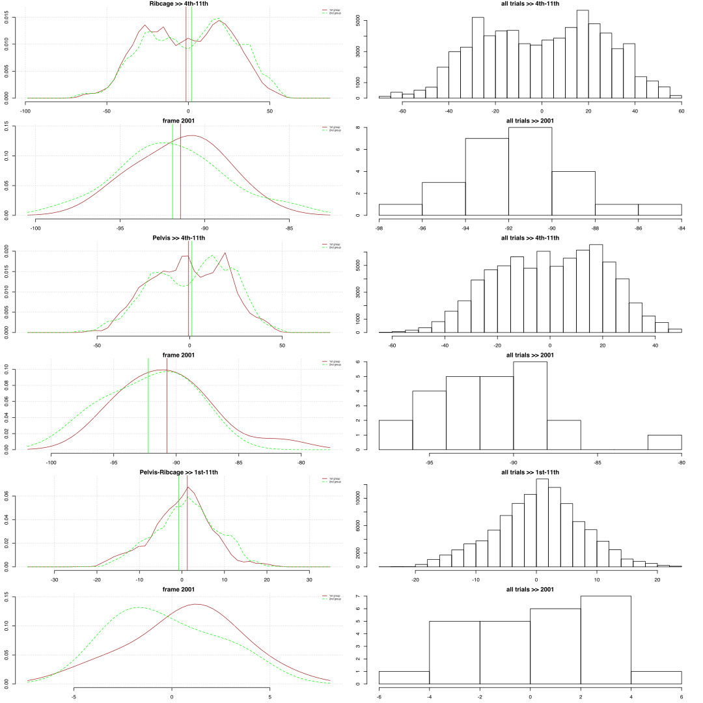
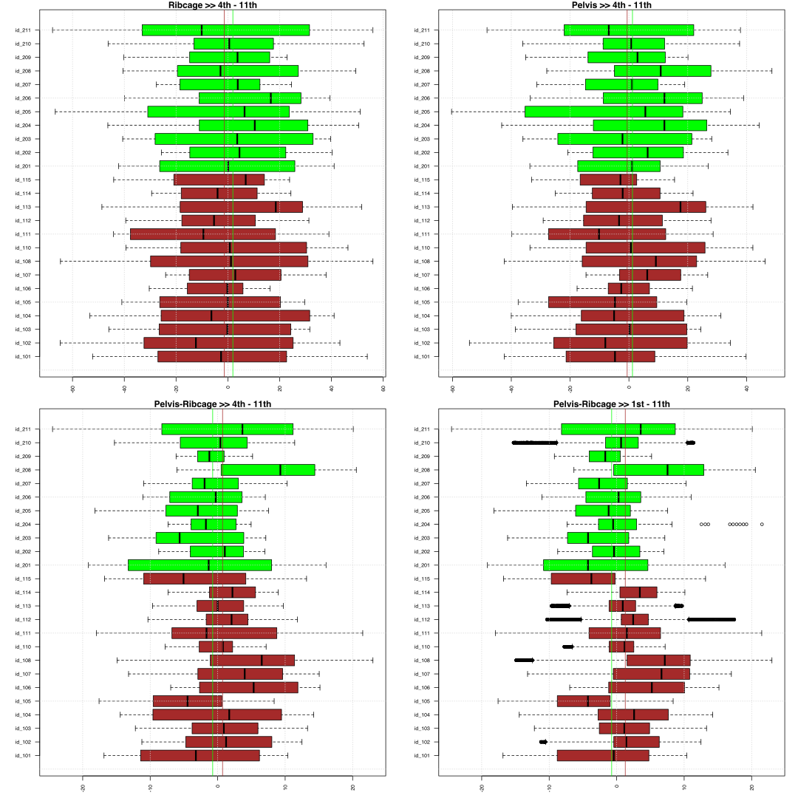
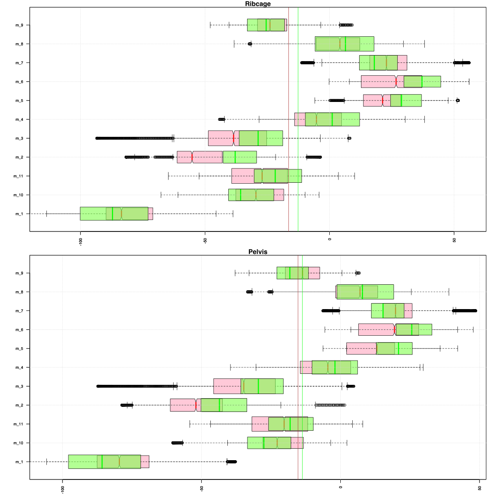
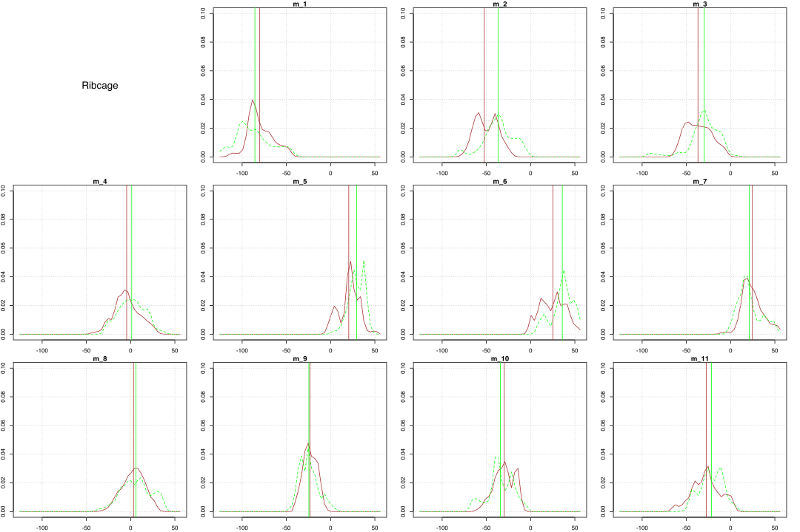
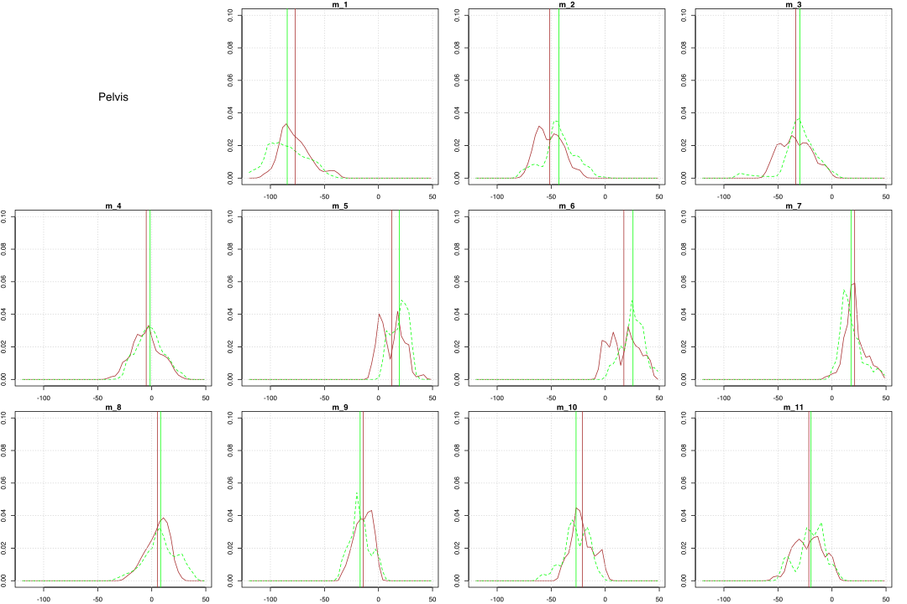
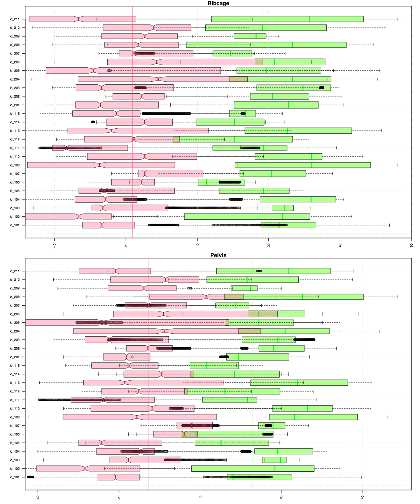
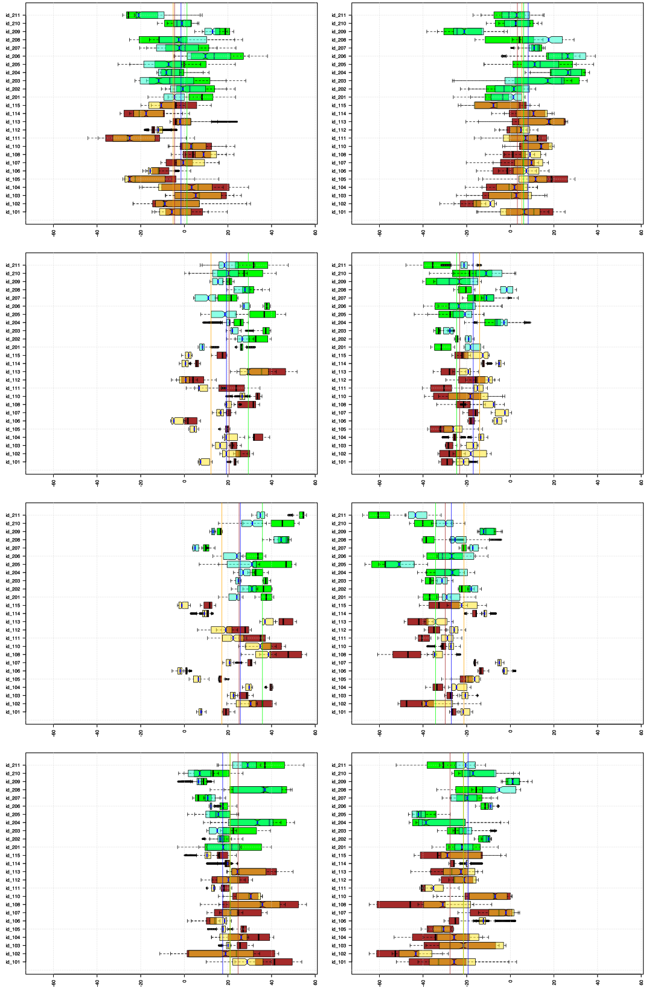

How do ribcage and pelvis change their orientation in the transverse plane?
We need to look at azimuth angles (and more importantly their difference) of the ‘sp’ planar points in the 4th and 1st spinal planes. We take for the ribcage orientation a 'sp4' plane that is perpendicular to T7-T12 with the orientation that was defined by a marker on the bottom of the breastbone.
Summary. Orientation of the ribcage and pelvis in the horisontal plane
The azimuth angles are measured in the absolute coordinate frame so that 0 degree angle corresponds to the X-axis direction and positive angles correspond to the anticlockwise turns or leftwards direction if the body is facing direction of the X-axis. In the 1st, 2nd and 3rd sub-movements in the 2nd step of the Short Form the body turns from the negative direction of the Y-axis to the positive direction of the X-axis whereas in from the 4th to 11th sub-movements locomotion is in the positive direction of the X-axis and turning to the left corresponds to positive azimuth angles and turning to the right to the negative.
As expected the mean value of the difference between the orientation of the ribcage and pelvis (Pelvis – Ribcage) is around 0 degrees. The range of this difference is about 5 degrees higher in the 2nd group than in the 1st (about 41 degrees for the 1st and 46 for the 2nd). If we look at value ranges for the pelvis and ribcage we can notice that the pelvis has much higher range than the ribcage in the 2nd group: 100.5 degrees vs. 108.9 for the pelvis and 120.7 vs. 123.8 for the ribcage. Thus it is likely that the 5 degrees for the differences in the pelvis and ribcage orientations (Pelvis – Ribcage) are connected with the more movement in the pelvis.
The overage ribcage angles in the 4th to 11th sub-movements are about 1.4 degree to the right in the 1st group and 2 degrees to the left in the 2nd. In the beginning of the Form (2001 code) both groups are oriented slightly rightwards: the 1st group shows the same 1.4 degrees to the right (-91.43) whereas the 2nd group has 1.9 degrees to the right (-91.9).
The overage pelvic angles in the 4th to 11th sub-movements are about 0.6 degree to the right in the 1st group and 1.2 degrees to the left in the 2nd. In the beginning of the Form (2001 code) both groups are oriented slightly rightwards: the 1st group shows the same 0.8 degrees to the right (-90.75) whereas the 2nd group has 2.2 degrees to the right (-92.23).
Than data is grouped by trial identities the 1st group continues to have the mean values for the ribcage and pelvis slightly rightwards (-1.5 degree and -0.8 degrees) whereas the 2nd group slightly leftwards (1.9 degrees and 1.4 degrees). For the 2nd group also the range of values seems to be biased towards the left side; in the 1st group minimum (right side) and maximum (left side) values are more or less symmetrical (7.7 vs. -7.9 for the ribcage and 7.95 vs.-7.5 for the pelvis) whereas in the 2nd group we see almost 3 times higher values for the left side (8.97 vs. -3.69 for ribcage and 11.5 vs. -4.7 for the pelvis). The range of the pelvic turning is about 16.2 degrees in the 2nd group and 15.5 in the 1st group. However, the range of the ribcage turning is higher for the 1st group; it is about 12.7 degrees in the 2nd group and 15.6 in the 1st group. The maximum value for the difference between the orientation of the pelvis and ribcage (Pelvis – Ribcage) is slightly higher for the 2nd group: 5.3 vs. 8.2 degree.
Pelvis - Ribcage >> 2nd step SF, 11 submovements
| mean | sd | sem | n | NAs | max | min | |
|---|---|---|---|---|---|---|---|
| 1st group | 1.273 | 7.053 | 0.0297 | 56414 | 2113 | 23.01 | -17.95 |
| 2nd group | -0.7387 | 7.374 | 0.0353 | 43749 | 1123 | 21.53 | -24.47 |
| 2001-1st | 0.6821 | 2.703 | 0.7223 | 14 | 0 | 5.496 | -4.786 |
| 2001-2nd | -0.3297 | 2.549 | 0.7684 | 11 | 0 | 3.906 | -3.686 |
Ribcage >> 4th - 11th sub-movements
| mean | sd | sem | n | NAs | max | min | |
|---|---|---|---|---|---|---|---|
| 1st group | -1.402 | 25.65 | 0.1268 | 40911 | 244 | 56.05 | -64.72 |
| 2nd group | 1.941 | 26.71 | 0.1515 | 31089 | 53 | 56.05 | -67.71 |
| 2001-1st | -91.43 | 2.403 | 0.6423 | 14 | 0 | -87.22 | -95.72 |
| 2001-2nd | -91.9 | 3.151 | 0.9499 | 11 | 0 | -85.57 | -97.49 |
Pelvis >> 4th - 11th sub-movements
| mean | sd | sem | n | NAs | max | min | |
|---|---|---|---|---|---|---|---|
| 1st group | -0.5971 | 20.02 | 0.0987 | 41155 | 0 | 46.28 | -54.24 |
| 2nd group | 1.207 | 21.25 | 0.1204 | 31142 | 0 | 48.63 | -60.31 |
| 2001-1st | -90.75 | 3.684 | 0.9847 | 14 | 0 | -81.72 | -95.86 |
| 2001-2nd | -92.23 | 3.306 | 0.9967 | 11 | 0 | -87.94 | -97.86 |

Than data is grouped by 11 sub-movements we can notice that the leftwards bias in the 2nd group for both - ribcage and pelvis disappears and we have more or less symmetrical values for the left and right sides (35.8 vs. -34.3 degrees for the ribcage and 25.7 vs. -27 for the pelvis). In the density plots we can notice that 4th and 8th sub-movements (m_4 and m_8) with a roll back movement have their mean values around 0 degree for the pelvis and ribcage whereas the 5th to 7th sub-movements are on the right side and 9th to 11th on the left side. The latter is expected and reflects the symmetry of the 2 intervals: the left bow stance into the right (4th-7th) and the right bow stance into the left (8th-11th).
Moreover than we look at two intervals with the symmetrical movement we see the same picture: the ribcage and pelvis are turned rightwards in the 1st interval (green color in boxplots) and leftwards in the 2nd interval (red color). Furthermore as we look at the boxplots for each of the 8 sub-movements in the 2 symmetrical intervals we can see that the 1st phases (4th and 8th sub-movements) have most spread value ranges followed by the last phases (7th and 11th). In both – 1st and last phases pelvic and ribcage value ranges seem to have overlaps. The 2 phases in the middle of the intervals (2nd and 3rd rows, 5th, 6th, 8th and 9th) have more limited value ranges with some trials without or small overlaps between pelvic and ribcage values. The none-overlap seems to occur in the cases than the pelvis and ribcage are continuously turning with a large enough offset in relation to each other (e.g. 3rd phase in the time series for the trial ‘id_211’).
Most of the time in all trials time series for the turning of the ribcage and pelvis show that the amplitude of the ribcage is higher than of the pelvis and that their motions are clearly correlated with each other within the same interval and mirrored along horizontal lines between both intervals. If there is a change between the left and right orientations within one interval than it occurs only in the 1st phase of the interval; so in absolute coordinate frame in the 1st interval (green lines) the pelvis and ribcage turn from the right to left (4th sub-movement, 1st phase of the interval) and correspondingly in the 2nd interval they turn from the left to right (8th sub-movement, 1st phase). The relative changes in the directions of the turning within the same interval seem to vary among the trials; so ‘id_206’ changes the direction 2 times in the 1st interval: in the middle of the 1st phase, at the end of the 2nd phase whereas ‘id_111’ changes the direction 4 times.
The change in the speed of the turning motion in the pelvis or ribcage is marked by the peak values of the dark olive and pink lines that represent the difference between the orientations of the pelvis and ribcage (pelvis – ribcage); in most of the trials they occur in around the middle of the 2nd phase (5th and 9th sub-movements) and at the boundaries between 2nd /3rd and 3rd/4th (end of 5th, 6th, 9th and 10th).
Orientation of the ribcage and pelvis in the horisontal plane, grouped by id-trials
Below are boxplots of the azimuth angles across different trials for the 4th to 11th sub-movements in 2nd step of the Short Form. Brown color represents the 1st group and green the 2nd. Horizontal axes are given in degrees of the azimuth angles so that positive values correspond to turning leftwards from positive direction of X-axis. The vertical axes represent grouping factor – identity of the trial.

Ribcage >> 4th-11th
| mean | sd | sem | n | NAs | max | min | |
|---|---|---|---|---|---|---|---|
| 1st group | -1.524 | 4.454 | 1.19 | 14 | 0 | 7.671 | -7.889 |
| 2nd group | 1.881 | 3.804 | 1.147 | 11 | 0 | 8.977 | -3.696 |
Pelvis >> 4th-11th
| mean | sd | sem | n | NAs | max | min | |
|---|---|---|---|---|---|---|---|
| 1st group | -0.7759 | 5.29 | 1.414 | 14 | 0 | 7.953 | -7.5 |
| 2nd group | 1.374 | 5.115 | 1.542 | 11 | 0 | 11.51 | -4.718 |
Pelvis-Ribcage >> 4th-11th
| mean | sd | sem | n | NAs | max | min | |
|---|---|---|---|---|---|---|---|
| 1st group | 0.6835 | 2.815 | 0.7523 | 14 | 0 | 5.251 | -4.572 |
| 2nd group | -0.5127 | 3.279 | 0.9886 | 11 | 0 | 8.242 | -3.931 |
Pelvis-Ribcage >> 1st-11th
| mean | sd | sem | n | NAs | max | min | |
|---|---|---|---|---|---|---|---|
| 1st group | 1.259 | 2.881 | 0.77 | 14 | 0 | 5.538 | -4.307 |
| 2nd group | -0.5728 | 2.775 | 0.8367 | 11 | 0 | 6.658 | -3.494 |
Density plots of the angle values for the sub-movements of two symmetrical intervals (4th to 11th) grouped by the trial identities.
Brown color represents the ribcage angles for the 1st group and light green the 2nd; vertical lines mark mean value of the corresponding trials. The orange color represents the pelvis angles for the 1st group and dark green the 2nd; vertical lines mark mean value of the corresponding trials. Dark pink color represents the difference angle between the orientation of pelvis and ribcage.
Blue vertical lines mark summ of the angle values in the beginning of the form and 90 degrees angle so that an orientation of the starting posture is changed from negative direction of the Y-axis in lab coordinate system (corresponds to the azimuth of -90 degrees) to the positive direction of the X-axis (0 degree). The dotted blue line marks a pelvis orientation whereas the continius blue lines a ribcage orientation.

Orientation of the ribcage and pelvis in the horisontal plane, grouped by sub-movements
Also we can look at differences in the angles across the 11 sub-movements without differentiating between individual trials. The red color represents the 1st group and green the 2nd. Horizontal axes are given in degrees of the azimuth angles and the vertical axes represent grouping factor – a number of the sub-movement.

Ribcage, 4th-11th
| mean | sd | sem | n | NAs | max | min | |
|---|---|---|---|---|---|---|---|
| 1st group | -1.452 | 23.48 | 8.303 | 8 | 0 | 25.11 | -29.8 |
| 2nd group | 1.631 | 26.31 | 9.303 | 8 | 0 | 35.82 | -34.3 |
Pelvis, 4th-11th
| mean | sd | sem | n | NAs | max | min | |
|---|---|---|---|---|---|---|---|
| 1st group | -0.7691 | 17.08 | 6.039 | 8 | 0 | 20.95 | -21.45 |
| 2nd group | 0.7354 | 20 | 7.073 | 8 | 0 | 25.68 | -27.01 |
Pelvis-Ribcage, 4th-11th
| mean | sd | sem | n | NAs | max | min | |
|---|---|---|---|---|---|---|---|
| 1st group | 0.6667 | 6.993 | 2.473 | 8 | 0 | 9.172 | -8.436 |
| 2nd group | -0.903 | 6.923 | 2.448 | 8 | 0 | 7.59 | -10.15 |
Density plots of the angle values grouped by the 11 sub-movements. Brown color represents the 1st group and green the 2nd; vertical lines mark mean value of the corresponding sub-movement for 1st and 2nd group. The 2nd and 3rd rows capture a symmetrical motion sequence: from the left into right bow stance and from the right into left.

Orientation of the ribcage and pelvis in the horisontal plane, grouped by id-trials and sub-movements
Below are boxplots for two intervals of the 2nd step that capture symmetrical body motion: from the left to right bow stance and from the right to left bow stance. The boxplots of these intervals are superimposed for each of the trials. The 1st interval is marked by green color and the 2nd by red (color is not associated with groups).

Also, we can differentiate between the different sub-movements within the two intervals and look at them individually. Below are two columns of the boxplots with 4 rows that represent consecutive phases of our two intervals. The 1st column represents the movement from the left to right bow stance (4th - 7th sub-movements), the 2nd column represents the movement from the right to left bow stance (8th - 11th sub-movements).
Brown and green color mark data of the ribcage angles for the 1st and 2nd group. Pale semi-transparent yellow and cyan-green colors mark angles of the pelvis for the 1st and 2nd group.

Furthermore we can compare the actual time series for the two intervals. The figure below shows 25 plots for each of the trials with the red/orange color marking the 2nd interval and green the 1st. Vertical lines show boundaries for the four sub-movements within each interval, horizontal lines show mean values of the ribcage (green for the 1st interval and orange for the 2nd) and a blue horizontal line marks the ribcage angle in the 1st frame of the trial than a person is in a straight position (to compensate for the different orientation of the body we add 90 degree). Horizontal axis is given in frames with sampling frequency 120 frames per second.
Green colors are for the 1st interval (4-7th sub-movements; left to right bow stance) and red-like for the 2nd interval (8-11th sub-movements; right to left bow stance); darker colors are for the pelvis and lighter colors for the ribcage; olive color for the (pelvis-ribcage) value in the 1st interval and pink color in the 2nd.
Ribcage (1-green & 2-orange), Pelvis (1-dark green & 2-red), Pelvis-Ribcage (1-olive & 2-dark pink)